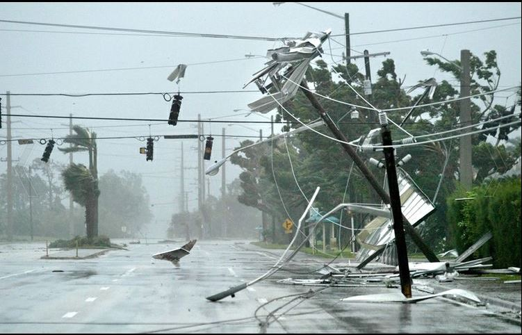
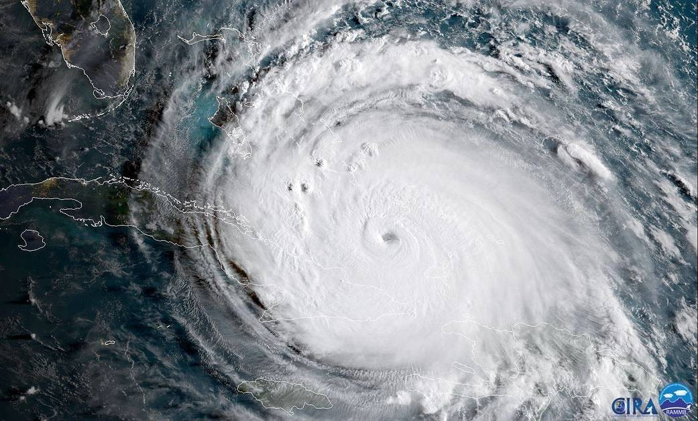

NATURAL DISASTERS
Florida is 5th state with the most natural disasters.
Florida is prone to hurricanes that devastate its coast frequently.
Florida often gets hurricanes, tornadoes, severe freezes, wildfires, and floods
WHILE
California is typically only known for earthquakes that don’t happen often
Most of the earthquakes that happen in California are just a 1.0 - 3.0 that don’t much damage

